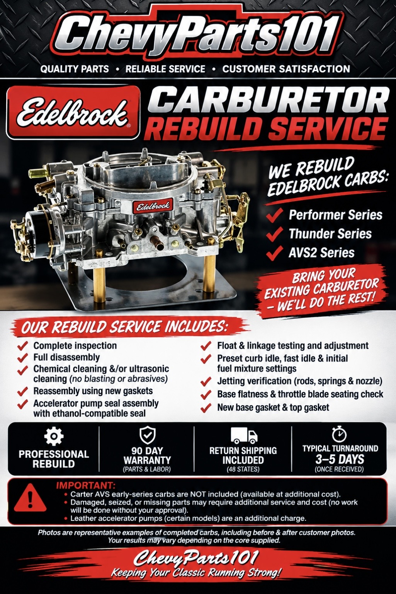

THANK YOU FOR SIGNING UP
CHECK YOUR EMAIL!
Your free Edelbrock 1406 rebuild manual should arrive shortly. Check your spam or promotions folder if you don't see it.

Rather have a pro rebuild your carburetor?
ChevyParts101 offers professional Edelbrock carburetor rebuild services for Performer, Thunder and AVS2 series carburetors.
- Thorough inspection, cleaning and reassembly
- 90-day warranty on covered parts and labor
- Return shipping included (48 contiguous states)
- Typical 3–5 day turnaround once received